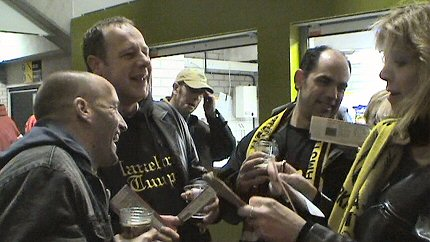
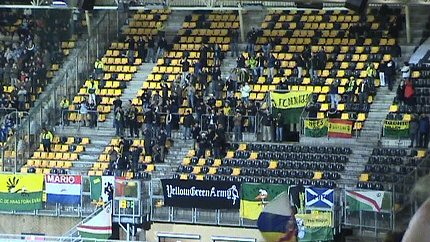

|
Roda JC - ADO Den Haag (1-1) 19 november 2004
|

Koempelin had to provide for the tickets to the Valley tonight. Here she is
cherishing three cocksuckers.

Een dikke 100 ADH-supporters trotseerden de winterse sneeuwbuien.

Na een goede openingsfase verzandt het Roda-voetbal weer in het oude
stramien van onsamenhangend gepruts. ADO deelt hier de eerste
waarschuwing uit.
Eerder had Bodor bijna met een fraai lobje gescoord.

Een tweede waarschuwingsschot.

Alweer met de schrik vrij.

Den Ouden ontdoet zich van Bodor.....

.... en scoort 0-1, (40').

Gezien de kansen tot dusver terecht, maar wat een dreun...!

Helaas.....een buitenspeldoelpunt van Roda.

Cleenex-supporter: welkom op de forumavond!

Zo meneer, leuke avond gehad?

Hier maakt Filipovich zich zeer terecht kwaad over een theatrale duikeling
van een Hagenees.

Van Dessel schiet hoog over.

Naarmate de tweede helft vordert gaat ADO meer de verdediging in. Aan
beide kanten zijn er enkele kansen zoals hier voor Roda. Helaas strandt
deze aanval in schoonheid. Opvallend is de complete off-day van Kone.

Weer een gemiste top-kans.

Kone zet zijn bewaker op het verkeerde been en speelt de bal naar Sergio.

Deze schiet de bal prachtig over doelman Dorus de Vries: 1-1 (86').

Er volgen nog spannende momenten voor beide doelen in de slotfase maar
het duel eindigt in een teleurstellend en onverwacht gelijkspel.

Marc Luijpers tegen zijn favoriete achtergrond ;-)

Jerome Colinet bezweert niks af te weten van een eventuele verhuur naar
een andere club. "De trainer heeft me niks gezegd".

Zo te zien wil hij heel graag bij Roda blijven.....

Z16 meisje met Rick Cremers, commercieel medewerker.

Ondanks het matige resultaat was het vanavond bovengemiddeld gezellig
in de Kick Off.

Tot slot een kijkersvraag: Wat klopt hier niet? Stuur je oplossing naar
koempel@koempel.nl
Foto's vanuit Haags perspectief:
adofans
© Koempels Pleasure Dome
|